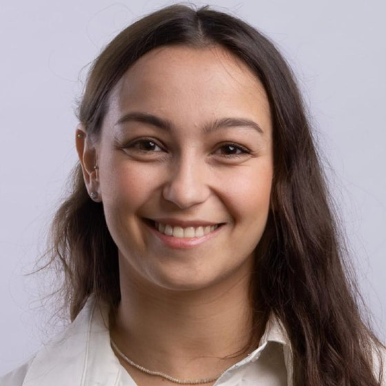

Sarah Lechtser
I've just started an M.Sc. at the Weizmann Institute of Science. I came to biology from physics and software: a B.Sc. in physics at the Technion, then years building cybersecurity and health-tech systems, most recently leading R&D at Fijoya. Reading about CAR-T cell therapy is what pulled me toward the immune system.
-
Oct 2026 – nowM.Sc. in Life SciencesWeizmann Institute of Science
Research master's, just getting started.

Rehovot -
2023 – nowFounding R&D teamFijoya
- Dec 2025 – nowDirector of Research Development
- Jun 2024 – Dec 2025Team Lead
- Jul 2023 – Jun 2024Software Engineer
Health-tech and fintech startup from Team8. Built the infrastructure from scratch with three others, then led the core AI, data and payment systems: a personalized recommendation engine, health and wellness content crawlers, and conversational AI, across mobile and web.
-
2022 – 2023Data EngineerBitSight
Data pipelines and analytics for large-scale network and security data, on Airflow, Kubernetes, AWS and Terraform.
-
2019 – 2022B.Sc. in PhysicsTechnion – Israel Institute of TechnologyDean's List, 4 semestersTop 5 in classTA, Electricity & Magnetism
Optical tweezersSLM-based optical traps for ultracold Fermi gas experiments. Catalyst surfacesSpatially-resolved kinetic Monte Carlo of CO oxidation, with Prof. Charlotte Vogt. Code Tensor networksHow efficient tensor network algorithms are for quantum computing. Ising model simulatorsMonte Carlo simulations of spin systems and phase transitions. Code -
2017 – 2019Cybersecurity Researcher & Detection EngineerMamram, IDF
Machine-learning anomaly detection on high-volume network data, incident investigation, and research on attacker behavior and honeypots.
Best Technological Project, C4I Corps 2018 -
2015 – 2017Red Team Penetration TesterMamram, IDF · Cyber Defender program
Designed and ran simulated attacks to test systems, people and incident response.
Beyond the lab
- EtgarimnowAdaptive surf coaching for people with disabilities.
- Big Brothers Big Sisters2022Volunteering as a mentor.
- Mashkiot2025On the technical team, running the organization's tech operations.
-
ORT Arad graduatesGoing back to my high school to talk with students about the paths open to them.